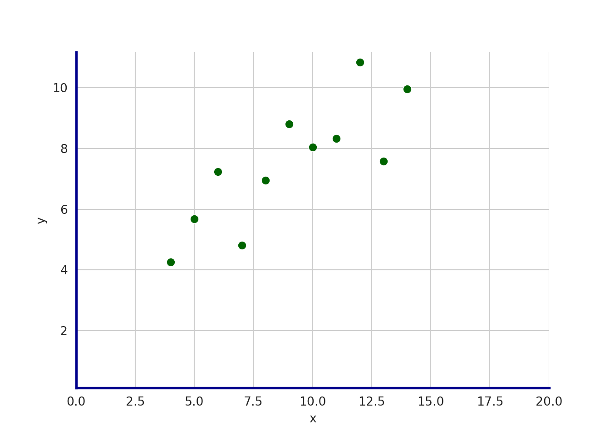
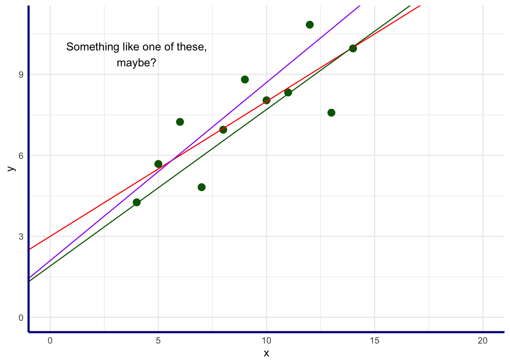

A favorite quote on the subject of data science is:
Data is the sword of the 21st century, those who wield it well, the Samurai
– Jonathan Rosenberg
Any samurai worth their salt will tell you that practice is the root of skill, and basics are the root of practice. You never stop practicing your basics; you cannot be too well-grounded in them.
I find it easy to be distracted by the siren call of machine learning and its exciting methods for discovering structure in noise and predicting outcomes… the allure of advanced techniques for extracting meaning from mountains of data is undeniable, and the bleeding edge of knowledge is always an exciting place to be.
I am sometimes prone to skipping ahead too fast, though. Blasting through basic stats in a semester or two of study is fine, and we all want to get on to the cool stuff, but I’m not always convinced that I, at least, have spent enough time in the trenches to have really solid intuition about my basics.
It says here that fundamental data errors, misinformation, and outright disinformation are going to become much bigger problems in the years ahead, as we cede more and more of our trust to social media (and unaccountable algorithm-driven policies), AI systems like ChatGPT (which I remain a huge fan of, and also hugely terrified by), and generally authoratitive-presenting sources of any kind, whether public or private. It’s bad enough that lots of people out there are careless with data and publish or share dumb mistakes and erroneous interpretations and conclusions; add to that the deliberate misinformation of social media troll farms skillfully and quickly polluting online information with outright lies and propaganda that spawn faster than fact-checkers can knock them down, and AI systems that confidently deliver incorrect information in manners that can be utterly convincing, and it’s clear that we’re going to need to keep our data-samurai basics fresh and regularly practiced.
If we don’t know how to quickly check basic statistical claims, we’re going to be in trouble. I know we all know how to google this stuff and figure it out when we need to, but that’s not good enough. And no, asking an AI system to do it for us isn’t going to be the answer. Our data-fu must be sharp.
Just outrageous. Does he think we’re chumps? We’re supposed to just buy his claim that this is true? That all of those summary stats above are accurate, and that when plotted they look like this? Not today. We will investigate for ourselves.
(Note: of course we know it’s all true and that he’s correct; this is basic stats, and he’s on our side. But we’re going to pretend we don’t trust him, and roll up our sleeves and check anyway, using R and Python.)
The data
Just to really flex on this, we’re not going to use the built-in copies of the anscombe data set available in R’s datasets library, or in Python’s Seaborn. We’ll build the dataframes ourselves in both languages.
We’ll zoom in on the first of the four sets here, and extract the columns as just x and y into a smaller dataframe. We’ll return to the full set later, but we only need one set to test the summary statistics above.
The mean of y is slightly higher than 7.5, but that’s a nit we can disregard; in nearly every real-world situation, there is no practical difference between 7.5 and 7.5009091, and the purpose of the Anscombe data is to show the importance of visualization, not to achieve perfect mathematical precision.
equation of regression line: \(Y = 3 + 0.5X\)
OK, so what is a regression line? In general terms, it’s a line of best fit, a straight line that get as close as possible to all of the points in the data set. Looking at the scatterplot of the first set’s points:
(Not going too bananas to make the plot exactly match R; seaborn and ggplot are different animals)
with sns.axes_style("whitegrid", {'axes.edgecolor': 'darkblue'}): set_1_baseplot = sns.scatterplot(data=set_1, x='x', y='y', color='darkgreen', s=50)# set the axis limits; XXX capture output to "foo" to prevent weird echoingfoo = set_1_baseplot.set(xlim=(0, 20), ylim=(0.11))set_1_baseplot.spines['top'].set_linewidth(0)set_1_baseplot.spines['right'].set_linewidth(0)set_1_baseplot.spines['left'].set_linewidth(2)set_1_baseplot.spines['bottom'].set_linewidth(2)plt.show()

A regression line is a straight line through the graph that best represents, to the extent that a straight line can, the overall shape of the data. It consists of an intercept (the value of X where the line crosses the X axis, where Y is 0), and a slope (the “rise over the run”, or how much each unit of increase in X, as we move left to right, increases or decreases the value / height of Y). It is expressed with the equation
\[y = \beta_0 + \beta_1 \times x\]
where \(\beta_0\) (“beta zero”) is the intercept, and \(\beta_1\) (“beta one”) is the slope, or the change in \(y\) for every change of one unit in \(x\). The regression line is the straight line through the points that best fits the overall shape of the data.
Sounds easy enough, but if we did it by eye, how would we do it? We could take some guesses:
Show the R code
set_1_baseplot +geom_abline(slope =0.5, intercept =3, color ="red") +geom_abline(slope =0.58, intercept =1.9, color ="darkgreen") +geom_abline(slope =0.66, intercept =2.1, color ="purple") +annotate("text", x =4, y =9.75, label="Something like one of these,\nmaybe?")

Fortunately, of course, we don’t need to guess. Fitting a linear model to the data will give us the slope and the intercept using the ordinary least squares (OLS) method, a fine default method for most cases.
The lm method in R is a simple way to get the fit for a linear model - we just have to remember that the intercept is the first coefficient, and the slope is the second.
fit <-lm(set_1$y ~ set_1$x)beta_0 <-coef(fit)[1]beta_1 <-coef(fit)[2]
In Python, the polyfit method of numpy will do what we need - we just have to remember that the slope is the first coefficient, and the intercept is the second.
fit = np.polyfit(set_1['x'], set_1['y'], 1)beta_0 = fit[1]beta_1 = fit[0]
Statistic
(R) Value
(Python) Value
intercept (\(\beta_0\))
3.0000909
3.0000909
slope (\(\beta_1\))
0.5000909
0.5000909
So, once again, there’s an inconsequential decimal offset, but it is small enough to disregard, and we can confirm that the equation of the regression line is indeed (basically) \(Y = 3 + 0.5X\), and here’s our plot:
Show the R code
set_1_baseplot +geom_abline(slope =0.5, intercept =3, color ="red")